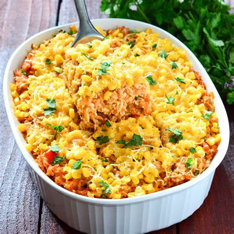

Chicken and Rice Casserole
What is Chicken and Rice Casserole?
Chicken and Rice Casserole is a classic American dish that is both comforting and delicious. It is believed to have originated in the southern United States, where it was a staple in many households.
Ingredients
4 chicken breasts
1 cup of uncooked long-grain white rice
1 1/2 cups of water
1 package of onion soup mix or homemade onion soup mix
10 ounces of condensed cream of mushroom soup
Instructions / How to Cook
1. Preheat your oven to 375°F.
2. In a mixing bowl, combine 2 cups of cooked rice, 1 can of cream of chicken soup, 1/2 teaspoon of onion powder, 1/2 teaspoon of garlic powder, 1/2 teaspoon of salt, 1/4 teaspoon of black pepper, and 1 cup of shredded cheddar cheese.
3. Add 2 cups of cooked chicken to the mixture and stir well.
4. Pour the mixture into a casserole dish and bake for 20-25 minutes or until the cheese is melted and bubbly.